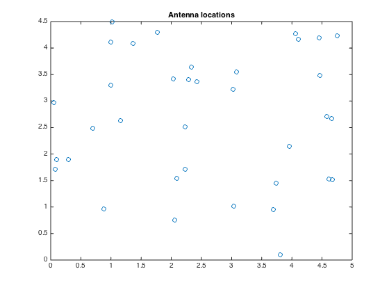
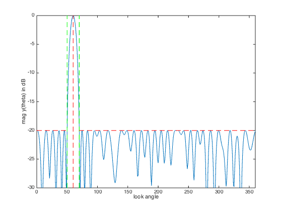
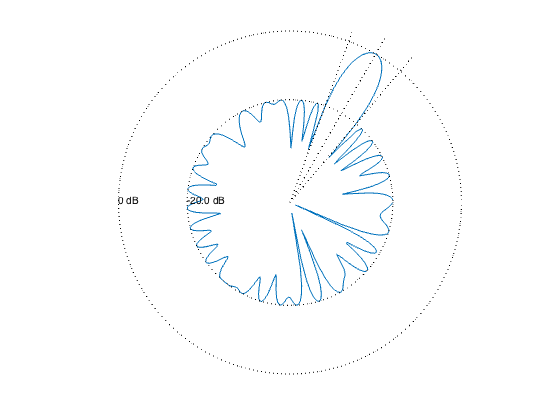

% "Convex optimization examples" lecture notes (EE364) by S. Boyd % "Antenna array pattern synthesis via convex optimization" % by H. Lebret and S. Boyd % (figures are generated) % % Designs an antenna array such that: % - it has unit a sensitivity at some target direction % - obeys constraint for minimum sidelobe level outside the beamwidth % - minimizes thermal noise power in y (sigma*||w||_2^2) % % This is a convex problem described as: % % minimize norm(w) % s.t. y(theta_tar) = 1 % |y(theta)| <= min_sidelobe for theta outside the beam % % where y is the antenna array gain pattern (complex function) and % variables are w (antenna array weights or shading coefficients). % Gain pattern is a linear function of w: y(theta) = w'*a(theta) % for some a(theta) describing antenna array configuration and specs. % % Written for CVX by Almir Mutapcic 02/02/06 % select array geometry ARRAY_GEOMETRY = '2D_RANDOM'; % ARRAY_GEOMETRY = '1D_UNIFORM_LINE'; % ARRAY_GEOMETRY = '2D_UNIFORM_LATTICE'; %******************************************************************** % problem specs %******************************************************************** lambda = 1; % wavelength theta_tar = 60; % target direction half_beamwidth = 10; % half beamwidth around the target direction min_sidelobe = -20; % maximum sidelobe level in dB %******************************************************************** % random array of n antenna elements %******************************************************************** if strcmp( ARRAY_GEOMETRY, '2D_RANDOM' ) % set random seed to repeat experiments rand('state',0); % (uniformly distributed on [0,L]-by-[0,L] square) n = 36; L = 5; loc = L*rand(n,2); %******************************************************************** % uniform 1D array with n elements with inter-element spacing d %******************************************************************** elseif strcmp( ARRAY_GEOMETRY, '1D_UNIFORM_LINE' ) % (unifrom array on a line) n = 30; d = 0.45*lambda; loc = [d*[0:n-1]' zeros(n,1)]; %******************************************************************** % uniform 2D array with m-by-m element with d spacing %******************************************************************** elseif strcmp( ARRAY_GEOMETRY, '2D_UNIFORM_LATTICE' ) m = 6; n = m^2; d = 0.45*lambda; loc = zeros(n,2); for x = 0:m-1 for y = 0:m-1 loc(m*y+x+1,:) = [x y]; end end loc = loc*d; else error('Undefined array geometry') end %******************************************************************** % construct optimization data %******************************************************************** % build matrix A that relates w and y(theta), ie, y = A*w theta = [1:360]'; A = kron(cos(pi*theta/180), loc(:,1)') + kron(sin(pi*theta/180), loc(:,2)'); A = exp(2*pi*i/lambda*A); % target constraint matrix [diff_closest, ind_closest] = min( abs(theta - theta_tar) ); Atar = A(ind_closest,:); % stopband constraint matrix ind = find(theta <= (theta_tar-half_beamwidth) | ... theta >= (theta_tar+half_beamwidth) ); As = A(ind,:); %******************************************************************** % optimization problem %******************************************************************** cvx_begin variable w(n) complex minimize( norm( w ) ) subject to Atar*w == 1; abs(As*w) <= 10^(min_sidelobe/20); cvx_end % check if problem was successfully solved disp(['Problem is ' cvx_status]) if ~strfind(cvx_status,'Solved') return end fprintf(1,'The minimum norm of w is %3.2f.\n\n',norm(w)); %******************************************************************** % plots %******************************************************************** figure(1), clf plot(loc(:,1),loc(:,2),'o') title('Antenna locations') % plot array pattern y = A*w; figure(2), clf ymin = -30; ymax = 0; plot([1:360], 20*log10(abs(y)), ... [theta_tar theta_tar],[ymin ymax],'r--',... [theta_tar+half_beamwidth theta_tar+half_beamwidth],[ymin ymax],'g--',... [theta_tar-half_beamwidth theta_tar-half_beamwidth],[ymin ymax],'g--',... [0 theta_tar-half_beamwidth],[min_sidelobe min_sidelobe],'r--',... [theta_tar+half_beamwidth 360],[min_sidelobe min_sidelobe],'r--'); xlabel('look angle'), ylabel('mag y(theta) in dB'); axis([0 360 ymin ymax]); % polar plot figure(3), clf zerodB = 50; dBY = 20*log10(abs(y)) + zerodB; plot(dBY.*cos(pi*theta/180), dBY.*sin(pi*theta/180), '-'); axis([-zerodB zerodB -zerodB zerodB]), axis('off'), axis('square') hold on plot(zerodB*cos(pi*theta/180),zerodB*sin(pi*theta/180),'k:') % 0 dB plot( (min_sidelobe + zerodB)*cos(pi*theta/180), ... (min_sidelobe + zerodB)*sin(pi*theta/180),'k:') % min level text(-zerodB,0,'0 dB') text(-(min_sidelobe + zerodB),0,sprintf('%0.1f dB',min_sidelobe)); theta_1 = theta_tar+half_beamwidth; theta_2 = theta_tar-half_beamwidth; plot([0 55*cos(theta_tar*pi/180)], [0 55*sin(theta_tar*pi/180)], 'k:') plot([0 55*cos(theta_1*pi/180)], [0 55*sin(theta_1*pi/180)], 'k:') plot([0 55*cos(theta_2*pi/180)], [0 55*sin(theta_2*pi/180)], 'k:') hold off
Calling SDPT3 4.0: 1439 variables, 414 equality constraints
For improved efficiency, SDPT3 is solving the dual problem.
------------------------------------------------------------
num. of constraints = 414
dim. of socp var = 1096, num. of socp blk = 342
dim. of linear var = 341
dim. of free var = 2 *** convert ublk to lblk
*******************************************************************
SDPT3: Infeasible path-following algorithms
*******************************************************************
version predcorr gam expon scale_data
NT 1 0.000 1 0
it pstep dstep pinfeas dinfeas gap prim-obj dual-obj cputime
-------------------------------------------------------------------
0|0.000|0.000|3.3e+02|1.5e+02|2.4e+05| 5.906293e+01 0.000000e+00| 0:0:00| chol 1 1
1|1.000|0.547|9.1e-05|6.8e+01|3.8e+04| 2.188284e+02 -9.179170e+00| 0:0:00| chol 1 1
2|1.000|0.819|6.0e-05|1.2e+01|7.1e+03| 2.197511e+02 -2.987168e+00| 0:0:00| chol 1 1
3|0.852|0.389|1.2e-04|7.5e+00|5.3e+03| 2.535258e+02 -3.682415e+00| 0:0:00| chol 1 1
4|1.000|0.791|1.6e-05|1.6e+00|1.2e+03| 2.289507e+02 -1.991184e+00| 0:0:00| chol 1 1
5|1.000|0.679|5.2e-07|5.0e-01|4.2e+02| 1.694981e+02 -1.888656e+00| 0:0:00| chol 1 1
6|0.373|0.533|3.6e-07|2.3e-01|2.5e+02| 1.425876e+02 -1.909005e+00| 0:0:00| chol 1 1
7|0.497|0.430|2.0e-07|1.3e-01|1.5e+02| 9.928571e+01 -1.908861e+00| 0:0:00| chol 1 1
8|0.700|0.201|7.6e-08|1.1e-01|7.8e+01| 5.110732e+01 -1.913898e+00| 0:0:00| chol 1 1
9|0.916|0.322|7.2e-09|7.2e-02|3.1e+01| 2.037523e+01 -1.912470e+00| 0:0:00| chol 1 1
10|1.000|0.548|4.5e-09|3.3e-02|8.2e+00| 4.969440e+00 -1.775824e+00| 0:0:00| chol 1 1
11|0.833|0.295|4.1e-09|2.3e-02|4.0e+00| 1.985691e+00 -1.507994e+00| 0:0:00| chol 1 1
12|0.499|0.599|2.2e-09|9.3e-03|2.5e+00| 1.230067e+00 -1.110619e+00| 0:0:00| chol 1 1
13|0.297|0.285|1.6e-09|6.6e-03|2.0e+00| 8.615001e-01 -1.032419e+00| 0:0:00| chol 1 1
14|0.916|0.146|1.9e-10|5.7e-03|9.9e-01|-6.053079e-02 -9.910650e-01| 0:0:01| chol 1 1
15|0.774|0.606|6.0e-11|2.2e-03|4.7e-01|-3.402450e-01 -7.925147e-01| 0:0:01| chol 1 1
16|1.000|0.352|9.0e-11|1.4e-03|2.1e-01|-5.479241e-01 -7.439176e-01| 0:0:01| chol 1 1
17|1.000|0.523|2.4e-11|6.9e-04|8.2e-02|-6.160181e-01 -6.935841e-01| 0:0:01| chol 1 1
18|0.992|0.483|2.0e-11|3.6e-04|3.5e-02|-6.390317e-01 -6.722340e-01| 0:0:01| chol 1 1
19|1.000|0.773|3.2e-11|8.1e-05|1.1e-02|-6.458126e-01 -6.560253e-01| 0:0:01| chol 1 1
20|0.830|0.817|7.0e-12|1.5e-05|3.3e-03|-6.492455e-01 -6.524852e-01| 0:0:01| chol 1 1
21|0.874|0.858|1.9e-11|2.2e-06|8.1e-04|-6.509541e-01 -6.517552e-01| 0:0:01| chol 1 1
22|0.901|0.833|4.5e-11|3.8e-07|1.8e-04|-6.514564e-01 -6.516388e-01| 0:0:01| chol 1 1
23|0.959|0.894|7.7e-10|5.2e-08|4.0e-05|-6.515734e-01 -6.516133e-01| 0:0:01| chol 2 2
24|1.000|0.934|1.7e-10|8.2e-09|6.1e-06|-6.516023e-01 -6.516084e-01| 0:0:01| chol 2 2
25|1.000|0.951|2.5e-10|1.2e-09|4.1e-07|-6.516072e-01 -6.516076e-01| 0:0:01| chol 2 2
26|0.623|0.931|1.8e-10|8.6e-11|1.9e-07|-6.516073e-01 -6.516075e-01| 0:0:01| chol 2 2
27|0.612|0.855|1.8e-10|4.3e-11|9.9e-08|-6.516074e-01 -6.516075e-01| 0:0:01| chol 2 2
28|0.610|0.850|1.5e-10|3.4e-11|5.2e-08|-6.516075e-01 -6.516075e-01| 0:0:01| chol 2 2
29|0.610|0.858|9.4e-11|3.6e-11|2.8e-08|-6.516075e-01 -6.516075e-01| 0:0:01|
stop: max(relative gap, infeasibilities) < 1.49e-08
-------------------------------------------------------------------
number of iterations = 29
primal objective value = -6.51607488e-01
dual objective value = -6.51607515e-01
gap := trace(XZ) = 2.77e-08
relative gap = 1.20e-08
actual relative gap = 1.20e-08
rel. primal infeas (scaled problem) = 9.35e-11
rel. dual " " " = 3.63e-11
rel. primal infeas (unscaled problem) = 0.00e+00
rel. dual " " " = 0.00e+00
norm(X), norm(y), norm(Z) = 1.1e+01, 1.0e+00, 2.4e+00
norm(A), norm(b), norm(C) = 1.6e+02, 2.0e+00, 3.3e+00
Total CPU time (secs) = 1.09
CPU time per iteration = 0.04
termination code = 0
DIMACS: 9.4e-11 0.0e+00 6.0e-11 0.0e+00 1.2e-08 1.2e-08
-------------------------------------------------------------------
------------------------------------------------------------
Status: Solved
Optimal value (cvx_optval): +0.651608
Problem is Solved
The minimum norm of w is 0.65.
  